Stump removal
Pull the main stump and attached roots instead of leaving them buried beneath a layer of chips.
Custom-built. Root-removing.
A purpose-built steel frame and multi-pulley winch system delivers up to 130,000 lbs of pulling force for stumps, stubborn fence posts, and heavy boulders.
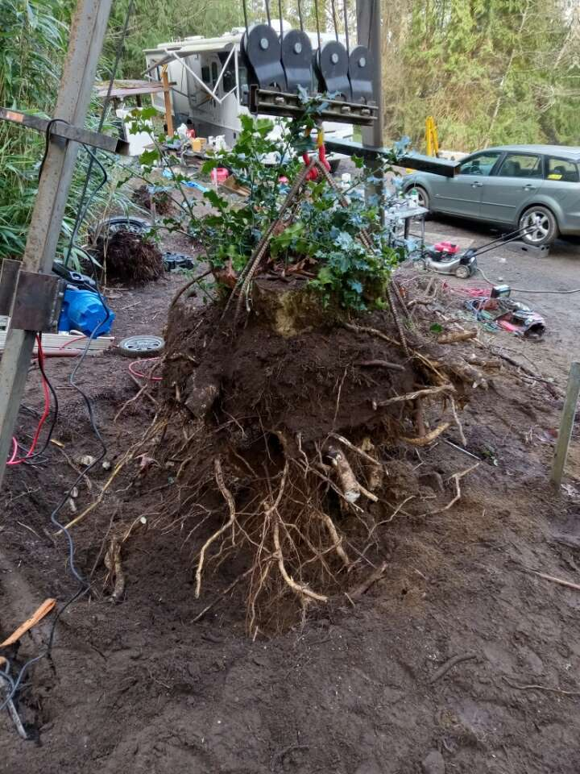
Meet the puller
Not rented. Not off the shelf. This machine was designed and built for one job: putting controlled pulling force right where it counts.
The large steel frame creates a stable working angle while a custom multi-pulley arrangement multiplies the winch's force. Together, the complete system can deliver up to 130,000 lbs of controlled pulling force—drawing the stump upward instead of shaving it below the surface.
More than stumps
Pull the main stump and attached roots instead of leaving them buried beneath a layer of chips.
Extract stubborn posts and their concrete footings so repairs, replacements, and new layouts can move forward.
Use controlled pulling force to move problem boulders when site conditions and access make the job a fit.
The real machine. Real work.
No stock photos and no off-the-shelf rig. This is the custom puller doing exactly what it was built to do.
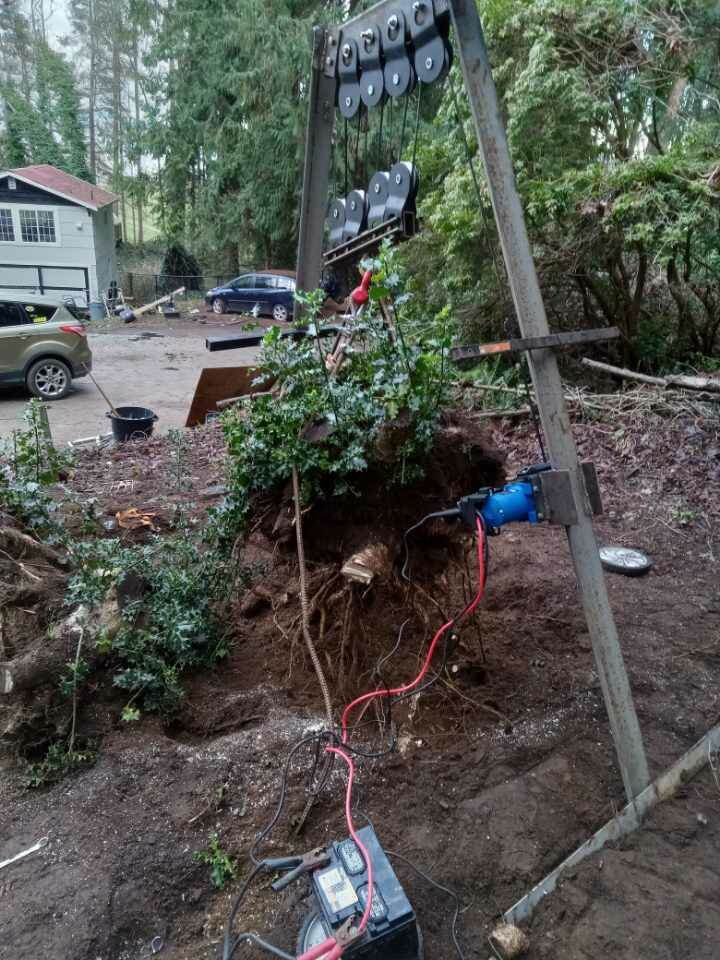
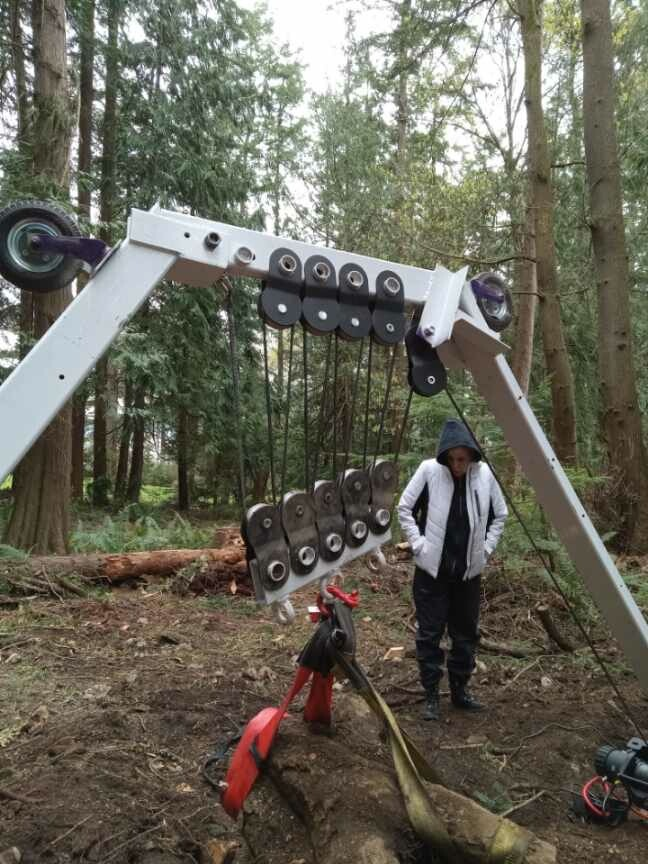
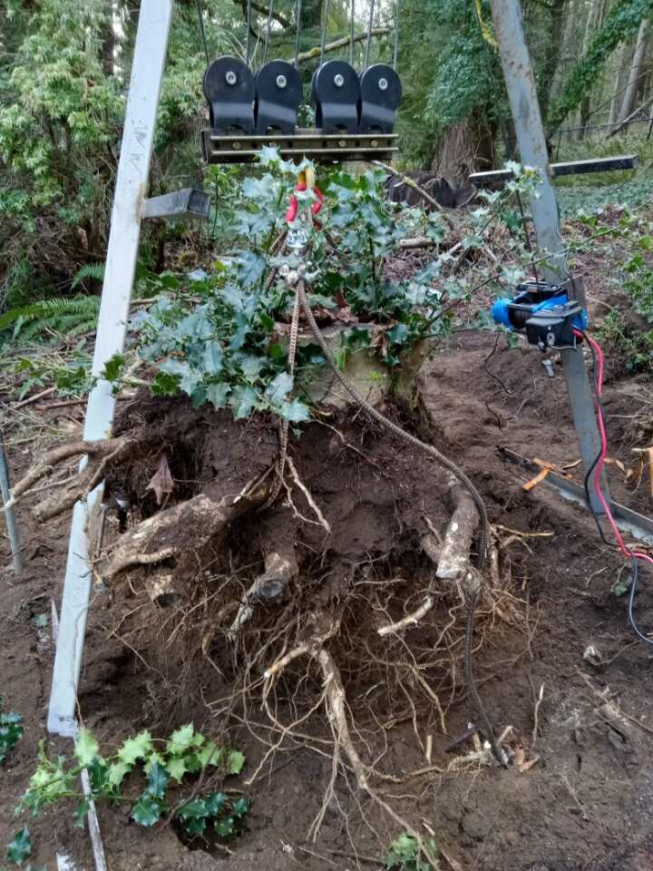
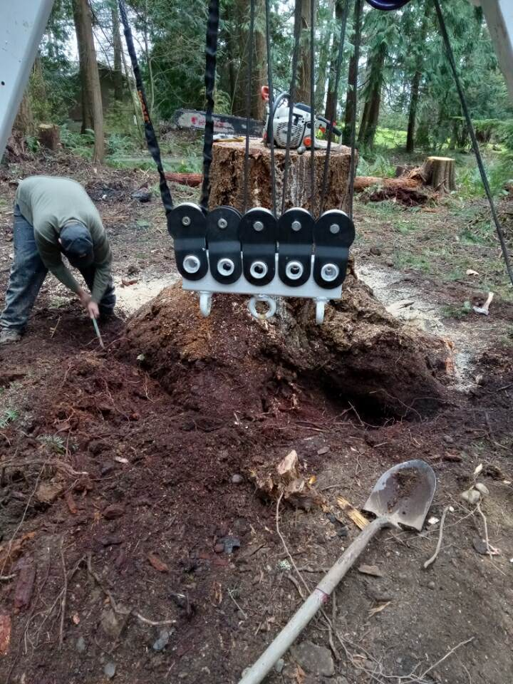
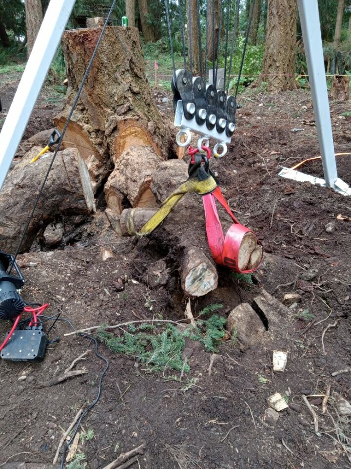
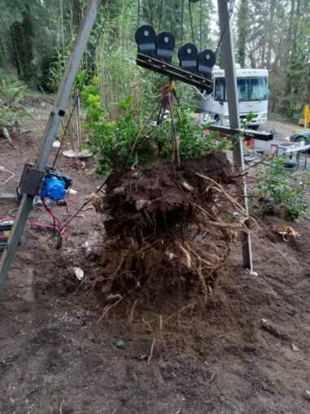
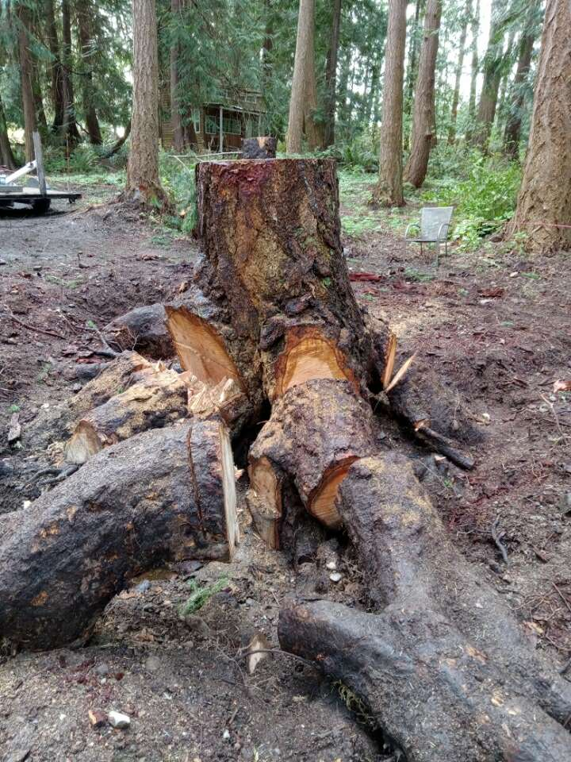
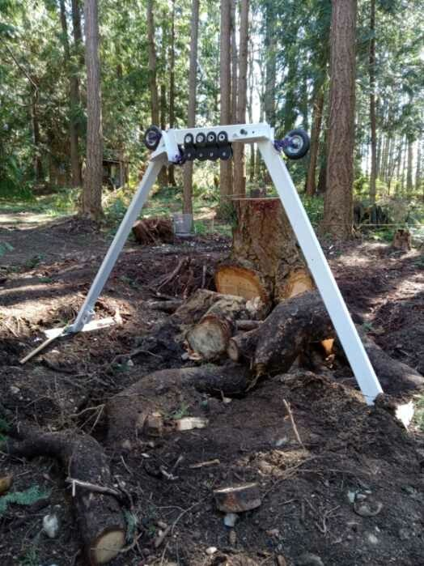
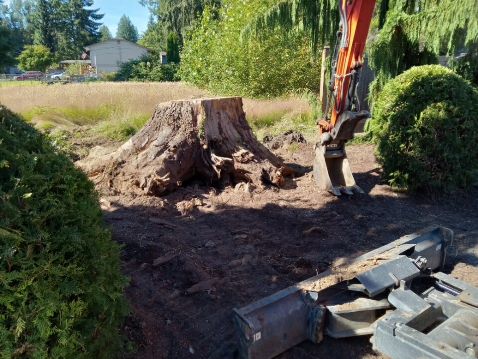
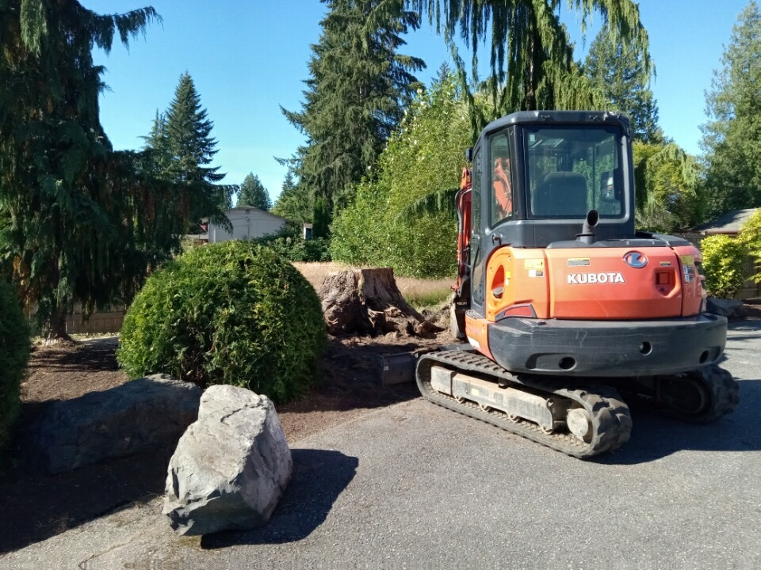
Simple from the start
Include the item to be removed, surrounding access, and something for scale.
Share your city, measurements, quantity, and the narrowest gate or access point.
Once the job is confirmed, the custom puller gets to work.
Wondering if we come to you?
Good to know
Your name, city, what needs to be removed, approximate measurements, quantity, the narrowest gate or access width, and a few clear photos.
In addition to stumps, the system can remove fence posts and move boulders when site conditions and access are suitable. Text photos for a quick first look.
Site conditions, stump size, species, access, nearby structures, and underground utilities all matter. Photos help with the first look; final suitability is confirmed before work begins.
Grinding cuts the stump into chips below the surface. Pulling aims to remove the main stump and attached roots from the ground.
Every site is different. Ask about cleanup and backfill needs when requesting your quote so the full job can be discussed upfront.
Ready when you are
Send a few photos and job details. We’ll take it from there.
Text for a quote (206) 549-4123